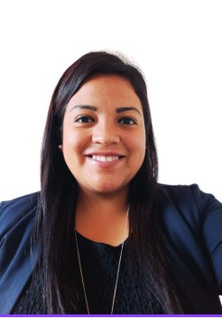
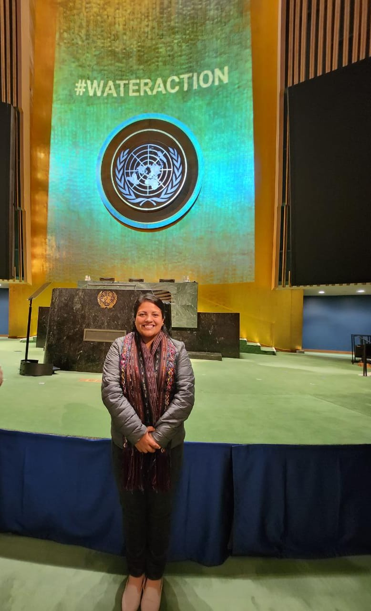
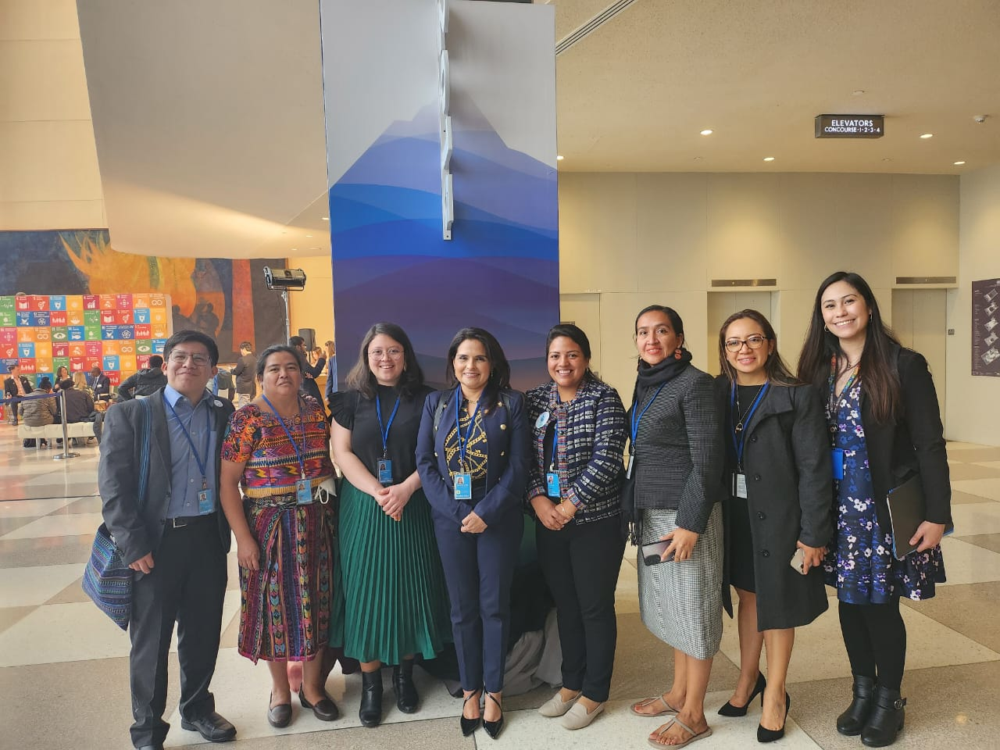
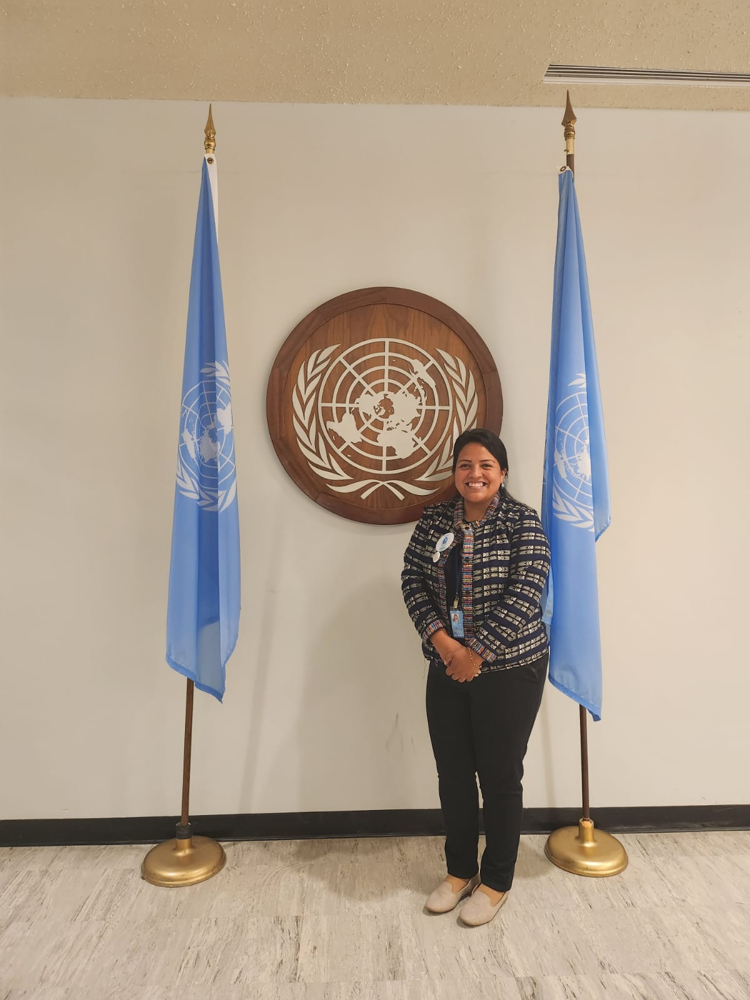

01
Dirección y liderazgo
Dirección estratégica, operativa y programática. Acompañamiento de equipos y representación institucional con visión compartida.
VISIÓN + EQUIPOSoy Migdalia Girón. Acompaño a comunidades, equipos e instituciones para impulsar un desarrollo más humano, inclusivo y sostenible.

EXPERIENCIA QUE CONECTA
ORGANIZACIONES Y COMUNIDADES
01 / SOBRE MÍ
Una mirada humana.
Un compromiso compartido.
Creo en el poder de las personas para transformar sus comunidades.
Soy profesional de Trabajo Social, con maestría en Administración de Recursos Humanos y más de 15 años de experiencia en cooperación nacional e internacional.
Mi trayectoria une el desarrollo comunitario, el liderazgo de las mujeres y la defensa de los derechos humanos. Conecto equipos, instituciones y comunidades para construir soluciones participativas, con enfoque de género y respeto por la diversidad cultural.
02 / ÁREAS DE APORTE
De la estrategia a la acción, siempre
con las personas en el centro.
Dirección estratégica, operativa y programática. Acompañamiento de equipos y representación institucional con visión compartida.
VISIÓN + EQUIPOPlanificación, marcos lógicos, monitoreo e indicadores. Seguimiento técnico y económico orientado a resultados.
ESTRATEGIA + ACCIÓNDiagnósticos y estrategias de género. Promoción de la equidad y del derecho humano al agua y al saneamiento.
EQUIDAD + DIGNIDADArticulación con actores locales, nacionales e internacionales para fortalecer la participación y la incidencia comunitaria.
DIÁLOGO + CONEXIÓNFortalecimiento de capacidades, autonomía económica y participación de mujeres rurales e indígenas.
AUTONOMÍA + PARTICIPACIÓNMetodologías participativas, comunicación asertiva, resolución de conflictos y acompañamiento a líderes.
ESCUCHA + APRENDIZAJE03 / MI TRAYECTORIA
Un recorrido por la cooperación, el desarrollo comunitario y la gestión de equipos y proyectos en Centroamérica.
Explora mi CV completoONGAWA · Guatemala
Dirección estratégica, operativa y programática. Liderazgo de equipos, representación institucional, alianzas e incidencia.
CATIE · Costa Rica
Diagnósticos y estrategias de género, construcción de indicadores y acompañamiento técnico.
Global Communities · Guatemala
Diagnósticos, metodologías participativas y procesos de diálogo para el fortalecimiento de equipos.
ONGAWA · Nicaragua
«La voz de las mujeres en Agua y Saneamiento»: liderazgo y participación de mujeres rurales.
ONGAWA · Sololá, Guatemala
Planes operativos, marcos lógicos, monitoreo de indicadores e informes. Seguimiento técnico y económico de proyectos.
AECID / Cáritas Guatemala · Sololá
Servicios técnicos en planes de negocio, liderazgo, seguridad alimentaria y comercialización.
FUNDI / CBC · Guatemala
Asociación PUENTE / CBC · Chimaltenango
Asociación PUENTE
Técnica en 2012 y supervisora en 2013.
UNA VOZ LOCAL, UNA CONVERSACIÓN GLOBAL
Panelista en la Conferencia Mundial del Agua de Naciones Unidas, representando a mujeres rurales de América Latina en el diálogo sobre el derecho humano al agua y al saneamiento.
Nueva York · Marzo de 2023Tres miradas de una experiencia compartida.

Un espacio para hacer escuchar las voces locales.

Compartir experiencias. Construir vínculos.

Compromiso local, diálogo internacional.
Selecciona una fotografía para verla completa.
04 / FORMACIÓN Y HERRAMIENTAS
Conocimiento que se convierte
en práctica y colaboración.
Universidad Mariano Gálvez de Guatemala
Universidad Mariano Gálvez de Guatemala
Universidad Mariano Gálvez de Guatemala
Escuela Normal Dr. Pedro Molina
Derechos humanos al agua y saneamiento, diseño participativo de proyectos, liderazgo de mujeres y prácticas restaurativas y mentoría con CIRCULA.
05 / CONSTRUYAMOS CONEXIONES
¿Tienes un proyecto, una idea o un reto compartido?
Me encantará conocerlo.
{kind=link}
{kind=link}
{kind=link}